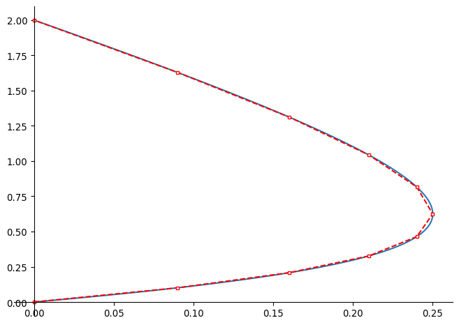

import numpy as npimport sympy as spimport matplotlib.pyplot as pltfrom sympy import plot_parametric, symbolsfrom IPython.display import display, Markdownfrom functools import partial## This is a 'partial function' so that we don't have to set figure size and aspect ratio every time.splot = partial(plot_parametric, aspect_ratio = (1,1),size=(4,4),axis_center = (0,0))def _plotter(x, y, create =False):if create: plt.figure(figsize=(6, 6)) plt.plot(x, y) plt.gca().set_aspect('equal', adjustable='box')returndef _centeraxes(): ax = plt.gca()# Move left y-axis and bottom x-axis to centre, passing through (0,0) ax.spines['left'].set_position('zero') ax.spines['bottom'].set_position('zero')# Eliminate upper and right axes ax.spines['right'].set_color('none') ax.spines['top'].set_color('none')# Show ticks in the left and lower axes only ax.xaxis.set_ticks_position('bottom') ax.yaxis.set_ticks_position('left')returndef _displayM(text, expr):""" Display text and expression inline. """ display(Markdown('{}{}'.format( text, sp.latex(expr, mode='inline') )) )
Integration and Differentiation via python
A quick reminder, you can perform differentiation and integration (definite or indefinite) as follows:
import sympy as spx, y, z = sp.symbols('x y z')f = sp.cos(x)**3result = sp.diff(f)result## To evaluate a function, substitute the value of x.# result.subs(x,sp.pi/3)
marker = {"color": "r", "marker": "s", "fillstyle":'full',"markerfacecolor":'white', "markersize":3, "linestyle":'--'}t = sp.symbols('t')f = t**2g = sp.cos(50* t)# Evaluate functions at ten points numpoints =10tval = [i/numpoints for i inlist(range(0,numpoints))] + [1]fvals = [f.subs(t, t0 ) for t0 in tval]gvals = [g.subs(t, t0 ) for t0 in tval]marker["args"] = [fvals,gvals]# Plot parameterssp.plot_parametric(f,g, (t, 0, 1), markers = marker)

<sympy.plotting.backends.matplotlibbackend.matplotlib.MatplotlibBackend at 0x154983b01f70>
\[
L = \int_a^b\sqrt{f'(t)^2 + g'(t)^2} dt
\]
To make things convenient we will convert our operations into a function.
def _curvelength(f, g, var):""" Inputs: f, g: x and y parametrizations var (tuple): (sp.symbol, lower lim, upper lim) var is a the variable upon which to integrate. """ t, a, b = var dx_dt = sp.diff(f, t) dy_dt = sp.diff(g, t) integ = (dx_dt**2+ dy_dt**2) integ = sp.sqrt(integ) _displayM("Integrating: ", integ) _displayM(f"over [{a}, {b}] w.r.t.", t) res = sp.integrate(integ, (t, a, b))print("gives:")return res
Example (circle/spiral)
t, r = sp.symbols('t r', positive =True)f = r * sp.cos(t)g = r * sp.sin(t)_curvelength(f,g, (t, 0, 2* sp.pi))